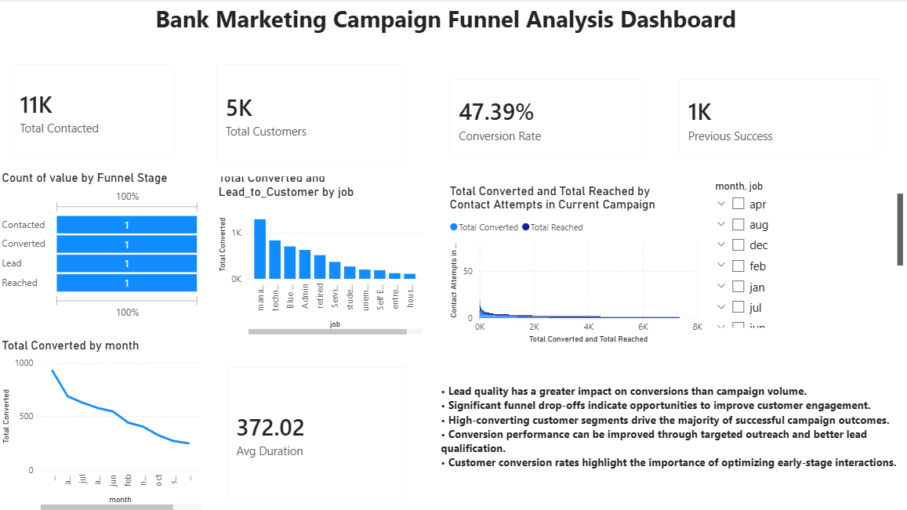

Customer Conversion & Campaign Performance Analytics
This project analyzes customer conversion behavior using the Bank Marketing Dataset. The objective is to identify funnel drop-offs, evaluate campaign effectiveness, and generate actionable recommendations to improve conversion rates.
Analyze Funnel Performance
Power BI
Bank Marketing Dataset
Customer Conversion
